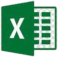

</Online Portfolio Usability Test>
Research
Projectintroductie
Omdat ik tijdens mijn 2de portfolio review heb meegekregen dat de keuzes rondom mijn portfolio niet goed onderbouwd zijn en dat ik testen moet uitvoeren op mijn portfolio, ben ik opnieuw onderzoek gaan doen naar de UX en het design van mijn portfolio en ben ik gaan zoeken naar een manier om de gebruikerservaring te testen van mijn portfolio. Ook is dit een goede kans om me meer te verdiepen in de wereld van UX en UI.
Inleiding
In de verslag laat ik zien hoe mijn portfolio is getest d.m.v. Usability testing. Usability testing s een evaluatiemethode waarbij gebruikers actief betrokken worden bij het testen van een product of systeem, met als doel de bruikbaarheid en gebruiksvriendelijkheid te beoordelen. Tijdens deze test wordt geobserveerd hoe gebruikers taken uitvoeren, problemen ondervinden en hoe gemakkelijk ze kunnen interacteren met de interface, wat waardevolle inzichten oplevert om het ontwerp te verbeteren.
Mijn doelgroep zijn mijn docenten, want zij gaan mijn portfolio uiteindelijk beoordelen. Ik ga dus de test uitvoeren omdat ik de gebruikerservaring voor mijn docenten wil verbeteren, maar ook omdat ik dan (naast het onderzoek dat ik al heb gedaan naar de UX van mijn portfolio) een goede onderbouwing heb voor de keuzes die ik heb onderzocht.
Usability testing
Waarom Usability testing?
Volgens cmdmethods.nl is het onmogelijk is om een ontwerp in één keer perfect te krijgen, ongeacht de hoeveelheid ervaring die je hebt. Ze moedigen aan om een klein aantal gebruikers te vragen om taken uit te voeren met een (papieren) prototype van de oplossing.
Tijdens deze test worden gebruikers vaak gevraagd om hardop na te denken, zodat je kunt begrijpen wat er in hun hoofd omgaat. Bij een formatieve gebruikerstest is het doel om zoveel mogelijk problemen te ontdekken die gebruikers tegenkomen bij het gebruik van de site.
> Bij een gebruikerstest wordt het gedrag van gebruikers getoetst aan vooraf ingestelde doelen. Het benadrukt dus het iteratieve karakter van ontwerpprocessen, waarbij feedback van gebruikers wordt ingezet om voortdurende verbeteringen aan te brengen.
In een video op de CMD methods website (https://cmdmethods.nl/cards/lab/usability-testing) wordt de rol van het usability-testteam bij de Rabobank uitgelicht. Dit team zet verschillende skills in, zoals service design en interactieontwerp, maar ook gebruikersonderzoek en natuurlijk usability testen. Ze leggen de nadruk op hoe belangrijk het is om usability testen te combineren met andere methoden. Daarnaast is het cruciaal om objectief te blijven tijdens het testen en interviewtechnieken te gebruiken om echt te snappen wat de gebruiker wil en nodig heeft.
Onderzoeksvraag:
Hoe gebruiksvriendelijk is mijn nieuwe online portfolio voor docenten en kunnen zij gemakkelijk benodigde informatie vinden?
Het doel bij deze onderzoeksvraag is om erachter te komen in hoeverre mijn nieuwe portfolio gebruiksvriendelijk is en of de content vindbaar is voor mijn docenten. Ook wil ik er achter komen of er verbetering nodig is aan mijn online portfolio.
In het onderzoek vind je ook de verantwoording voor de stylescape die ik heb gemaakt voor evi.
Testmethode
Om te bepalen mijn nieuwe portfolio beter presteert voor mijn docenten, zou ik verschillende factoren moeten overwegen.
Ten eerste zou ik de gebruiksvriendelijkheid van de prototypes moeten evalueren, zoals de navigatie, het ontwerp en de algehele ervaring voor de docenten.
Ten tweede zou ik ook de functionaliteit van de prototypes moeten beoordelen, zoals de snelheid, betrouwbaarheid en beschikbare functies. Verder zou ik ook feedback van de docenten kunnen verzamelen om te begrijpen hoe ik de optimale ervaring kan creëren.
Door deze factoren te overwegen, kan ik bepalen welk online prototype beter presteert voor mijn docenten.
De test
De test bestaat uit 1 scenario die ik mijn docenten laat uitvoeren op mijn nieuwe verbeterde portfolio prototype. Bij dit scenario zijn er wat standaard vragen, zoals “Is het makkelijk gegaan?” of “Wat vond je beter gaan?”. De vragen plaats ik in een tabel schema met een schaal van 1 – 5. Dit schema vult de testpersoon dan tijdens de test in, terwijl ik af en toe een vraag stel over waarom de keuze is gemaakt zoals de tester hem heeft ingevuld. Op deze manier kan ik veel kwalitatieve-, maar ook kwantitatieve informatie verzamelen.
Waarom een schema gebruiken?
Arjan (docent) adviseerde om bij het testen een schema te gebruiken waarbij een schaal zit van 1 – 5. De schaal telt niet als puntentelling, maar is bedoeld om de gebruiker te ondersteunen in het maken van zijn/ haar keuzes en om geen halve antwoorden te ontvangen waar je niet veel mee kan.
De gebruiker weet vaak zelf niet hoe die moet antwoorden op bepaalde vragen. Een flauw voorbeeld, maar als je iemand vraagt wat hij / zij van de header op een website vindt, dan is het antwoord waarschijnlijk “Goed” of “Het werkt”. Ja, maar hoe goed vind je het en waarom? Waarom werkt het voor jou? Hierbij komt natuurlijk ook de manier van vraagstelling bij kijken, maar ik denk dat dit voorbeeld mijn punt wel onderbouwd.
Scenario onderzoek
Om erachter te komen hoe ik effectieve scenario’s kan bedenken voor het testen op mijn docenten, heb ik ChatGPT uitgelegd hoe mijn online portfolio in elkaar zit en heb ik gevraagd of die daar 3 scenario’s bij kan bedenken. Waarom 3? Omdat ik het idee had dat ik uit 3 scenario’s voldoende informatie kon verkrijgen. Uiteindelijk bleek na een gesprek met een van mijn docenten dat 2 scenario’s ook wel voldoende zijn. Uiteindelijk heb ik er 1 scenario van gemaakt en wat algemene vragen.
Voor het opstellen van scenario’s moet ik er eerst achter komen hoe je een scenario moet opstellen? En aan welke eisen deze moet voldoen. Hiervoor heb ik een Scenario onderzoek gedaan.
Conclusie scenario onderzoek
Om de vraag "Hoe moet je een scenario opstellen en aan welke eisen moet deze voldoen" in het kort te beantwoorden is de conclusie dat een effectief scenario duidelijk moet zijn om de deelnemer in staat te stellen de taak uit te laten voeren zonder te veel aanwijzingen te geven. Het is belangrijk om deelnemers te voorzien van alle benodigde informatie voor de taak, zonder hen te vertellen waar ze precies moeten klikken.
Tijdens een test is het cruciaal om de echte wereld zoveel mogelijk na te bootsen, waarbij representatieve gebruikers worden gerekruteerd en elke taakscenario realistisch is, typisch voor hoe mensen het systeem daadwerkelijk gebruiken zonder het antwoord weg te geven.
- een realistische en gangbare situatie weergeven, zoals mensen het systeem doorgaans gebruiken in hun eigen tijd en tijdens hun gebruikelijke activiteiten.
- gebruikers aanmoedigen om actief met de interface te communiceren en taken uit te voeren, i.p.v. passief instructies te laten volgen.
- de gebruiker niet direct het antwoord verklappen, maar moet in plaats daarvan de nodige context en informatie verschaffen om de taak adequaat uit te voeren.
Een Scenario moet:
Scenario en vragen
Scenario:Je wilt de bewijslast van de leeruitkomst ‘Development’ in het Online portfolio beoordelen.
Je bent een docent die de bewijslast van een student wil evalueren met betrekking tot de leeruitkomst ‘Development’ via zijn online portfolio. Je wilt specifieke voorbeelden zien die zijn Development vaardigheden aantonen.
-
Vragen
- Op een schaal van 1 tot 5, hoe eenvoudig was het voor jou om de bewijslasten voor de leeruitkomst 'Development' te vinden?
- Op een schaal van 1 tot 5, in hoeverre zijn de bewijslasten georganiseerd en gestructureerd, waardoor je efficiënt kon beoordelen of de leeruitkomst 'Development' werd beheerst?
Doel van vraag:Er achter komen of de bewijslasten eenvoudig te vinden zijn of niet.
Doel van vraag:Er achter komen of de bewijslasten duidelijk de betreffende leeruitkomst.
Overige vragen:Algemene vragen over UI en Design.
-
Vragen
- Op een schaal van 1 tot 5, hoe makkelijk vond je het om te navigeren door de website?
- In hoeverre vind je het portfolio consistent?
- Zijn de kleuren van het portfolio storend bij het gebruiken van de website?
- Is er iets aan de website dat je stoorde of dat je onprettig vond dat we nog niet hebben besproken?
Doel van vraag:Er achter komen of de structuur en de stijl van mijn portfolio consistent is.
Doel van vraag:Er achter komen of de bewijslasten duidelijk de betreffende leeruitkomst.
Doel van vraag:Er achter komen of de kleuren van de website de structuur en duidelijkheid van de website niet belemmeren.
Doel van vraag:De deelnemer de mogelijkheid geven om zijn/haar mening te geven over iets op de website dat stoorde waar ik niet bij stil heb gestaan.
Je kunt de volledige scenario onderzoek hieronder bekijken:
Testverloop
Toen de vragen voor de test eindelijk af waren kon ik gaan beginnen met testen. Mijn eerste test was met Jo-An kamp. Jo- an is gespecialiseerd in onderzoeken, maar ze was een tijdje afwezig op de campus i.v.m. ziekte. Het was dus heel toevallig dat ik haar die dinsdag ben tegengekomen wanneer ik de eerste test uit wilde voeren. Die eerste test was eigenlijk ook meer een proeftest. Ik had eerst andere scenario’s en vragen. Het scenario en de vragen zoals die hier boven staan zijn na de test met Jo-An en na feedback van andere docenten pas tot stand gekomen. Je kunt de eerste scenario’s en vragen op Afbeelding 1 zien.

Afbeelding 1 Online Portfolio Usability Test sheet (oud)
Via deze link kun je hem ook als Pdf bekijken.
Via deze link kun je het zip mapje downloaden waarin een audio opname en het (oude) invulblad vinden van tijdens de test. Deze heb ik uitgesloten van de officiële testen, omdat deze test meer een leermoment was voor mij.
Jo-An gaf hele goede aanwijzingen en tips die ik heb meegenomen in de andere tests.
Zo heb ik voor elke test een aantal stappen opgeschreven in de notities van mijn telefoon voordat ik begon met de test (Afbeelding 2).

Afbeelding 2 Testprocedure Notities
Resultaten
Na de proeftest met Jo-An was het tijd om aan de echte test te beginnen. Alle testen zijn met hetzelfde prototype getest, namelijk de website waar je nu surft. Met uiteraard het nieuwe invulblad waarin de vragen en het scenario in staan zoals je die bij het scenario onderzoek hebt gelezen.
Nadat alle testen waren uitgevoerd, had ik een heleboel (nuttige) informatie om te verwerken in mijn documentatie. Zoals je bij (bijna) alle vragen kon zien, heb ik een schaal van 1 – 5 heb ik gebruikt (1 negatief – 5 positief). Dit was eerst door elkaar, namelijk sommige die een schaal hadden waar 1 positief was en 5 negatief. Dit is ook veranderd na de test met Jo-An. Jo-An gaf namelijk aan dat het nogal verwarrend was wanneer iets wel of niet goed is om in te vullen. Daarom heb ik dat aangepast. Mijn eerste intentie bij de verschillende schalen was om de aandacht van de tester (mijn docenten) bij de test te houden, zodat ze niet zomaar wat invoeren. Uiteindelijk is de nieuwe aanpassing van de schaal geen probleem geworden, want ik heb hele nuttige informatie ontvangen voor de gebruikerservaring.
Je kunt de volledige Usability Test hieronder bekijken:
Uit de test bleek dat mijn nieuwe online portfolio over het algemeen als gebruiksvriendelijk wordt ervaren door mijn docenten. De navigatie kreeg positieve scores van 4 of hoger op een schaal van 1 tot 5, wat aangeeft dat docenten de website makkelijk konden doorlopen. De kleuren en consistentie van de interface werden ook positief beoordeeld. Hoewel er enkele punten van aandacht zijn, met name rond de organisatie van bewijslasten en enkele visuele aspecten, tonen de resultaten aan dat het portfolio goed presteert volgens de doelstellingen van de test. Docenten konden overwegend gemakkelijk de benodigde informatie vinden, wat aansluit bij mijn onderzoeksvraag en de gebruikerservaring van mijn docenten.
met deze link kun je een zip mapje downloaden met daar in de tests die ik met mijn docenten heb uitgevoerd.
Reflectie
Over het geheel genomen bood (het proces naar) de test waardevolle inzichten bij het optimaliseren van mijn online portfolio. Tijdens mijn onderzoek naar de gebruikerservaring en het design van mijn online portfolio heb ik waardevolle inzichten verworven.
Het scenario-onderzoek heeft me geleerd hoe ik effectieve scenario's kan opstellen, waarbij duidelijkheid en realistische situaties cruciaal zijn om deelnemers in staat te stellen taken uit te voeren zonder te veel aanwijzingen. Deze kennis heeft bijgedragen aan het formuleren van specifieke en relevante scenario’s en vragen voor mijn docenten, waardoor ik hun interactie met mijn portfolio beter kon beoordelen.
De proeftest met Jo-An Kamp was een waardevol leermoment waar ik ontdekte dat het opstellen van duidelijk stappenplan en het ontvangen van gerichte feedback essentieel zijn bij het uitvoeren van usability tests. Deze inzichten heb ik toegepast in de latere tests, wat de kwaliteit van mijn onderzoek heeft verbeterd. Het uitvoeren van de usability test met mijn docenten heeft me veel geleerd over de gebruikerservaring van mijn online portfolio. De feedback van mijn docenten, zoals de suggesties met betrekking tot het organiseren van bewijslasten en enkele andere visuele aspecten heeft bijgedragen aan het verbeteren van het ontwerp en de bruikbaarheid van mijn portfolio. Dit proces heeft me niet alleen meer inzicht gegeven in UX en UI, maar heeft ook mijn vermogen vergroot om de gebruikerservaring te optimaliseren op basis van concrete feedback.
Bewijslast en Bronnen
Je kunt de onderzoeken en meerdere bronnen die bij dit project horen hieronder vinden.
Online Portfolio Scenario Onderzoek

Online Portfolio Usability Proeftest Jo-An Kamp.zip 
Online Portfolio Usability Test Resultaten Berekening
Online Portfolio Usability Test sheet Blank (oud)
Online Portfolio Usability Test sheet Blank
Online Portfolio Usability Test
Online Portfolio Usability Tests.zip
Online Portfolio Usability Test Verantwoording
Usability Testing workshop
Usability Testing CMD Methods
Turn User Goals into Task Scenarios for Usability Testing
Copyright ©2023 By Bavli Armanyous, All Rights Reserved